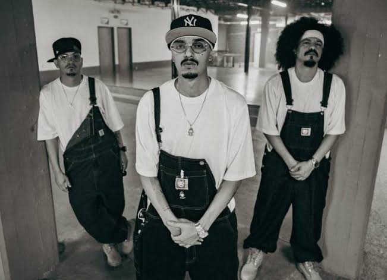
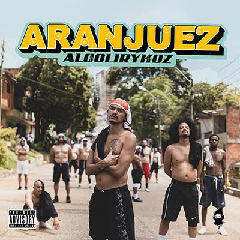

Alcolirykoz es un grupo colombiano de hip hop formado en Medellín en el año 2005. Es conocido por sus letras directas, sarcásticas y con humor negro.
Según su biografía, el proyecto existía desde 1999 con otro nombre (Arnez) y tomó el nombre de Alcolirykoz en 2005.
Empezaron con el EP En letras mayúsculas en 2007.
Con los años publicaron varios discos y presentaron la serie web Una deuda con la historia.
Son una de las agrupaciones más importantes del rap colombiano.
| Canción | Dato |
| Piñata en el 301 | Una de sus canciones más conocidas |
| No está en venta | Canción de su repertorio |
| La caza de Nariño | Canción de su repertorio |
| Anestesia local 1 y 2 | Canciones en dos partes |
| Baño de ruda | Canción de su repertorio |

Su hip hop se mezcla con salsa, bolero,
jazz y soul.
Sus letras hablan de la vida diaria con sarcasmo y humor negro.
Más información: Biografía de Alcolirykoz